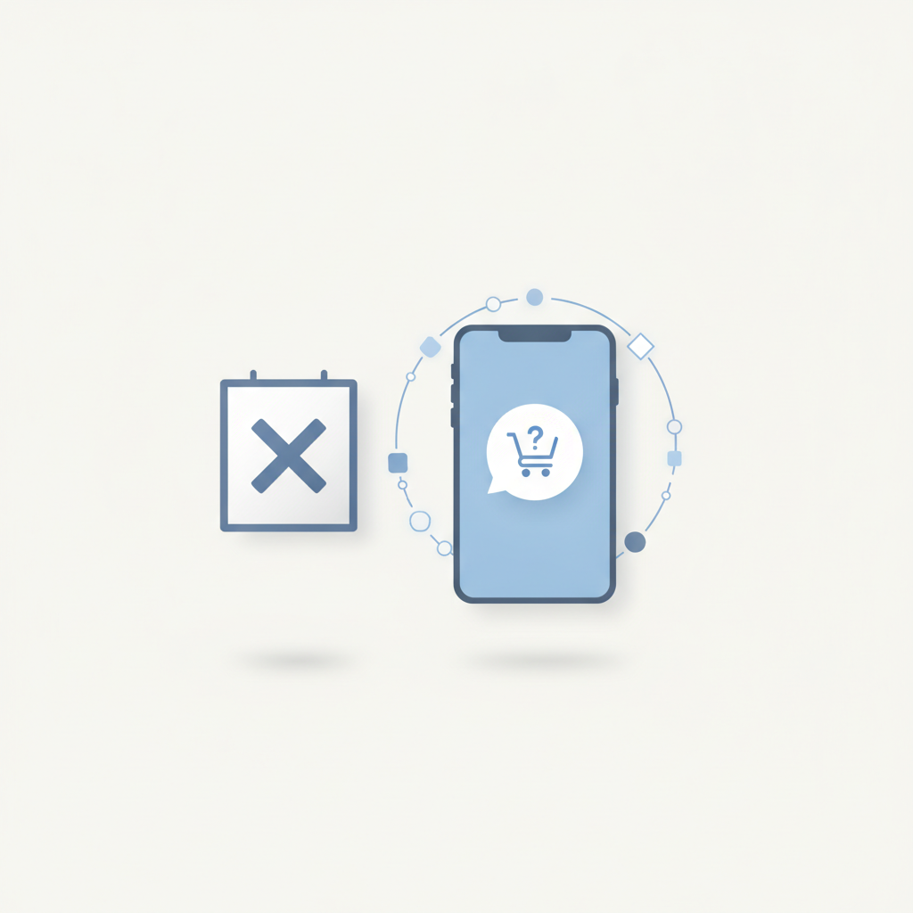
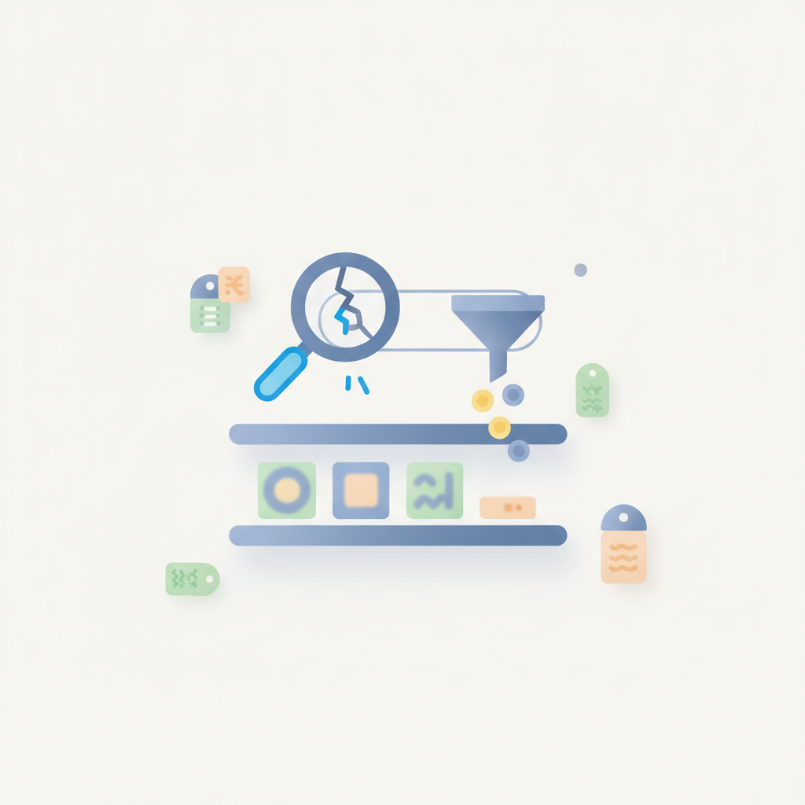
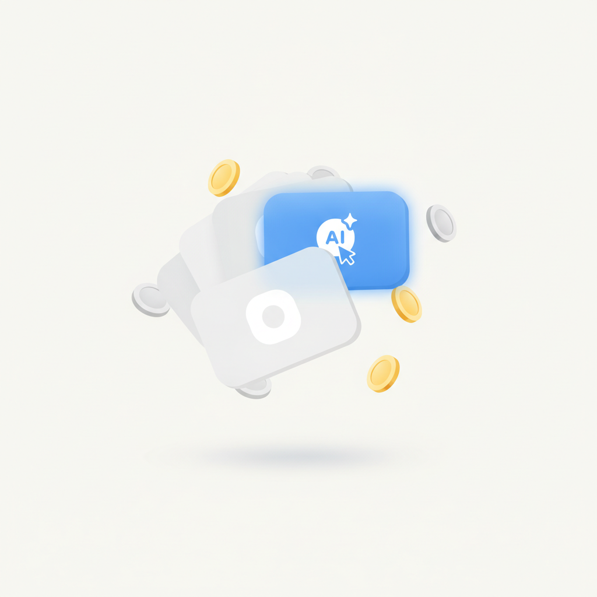
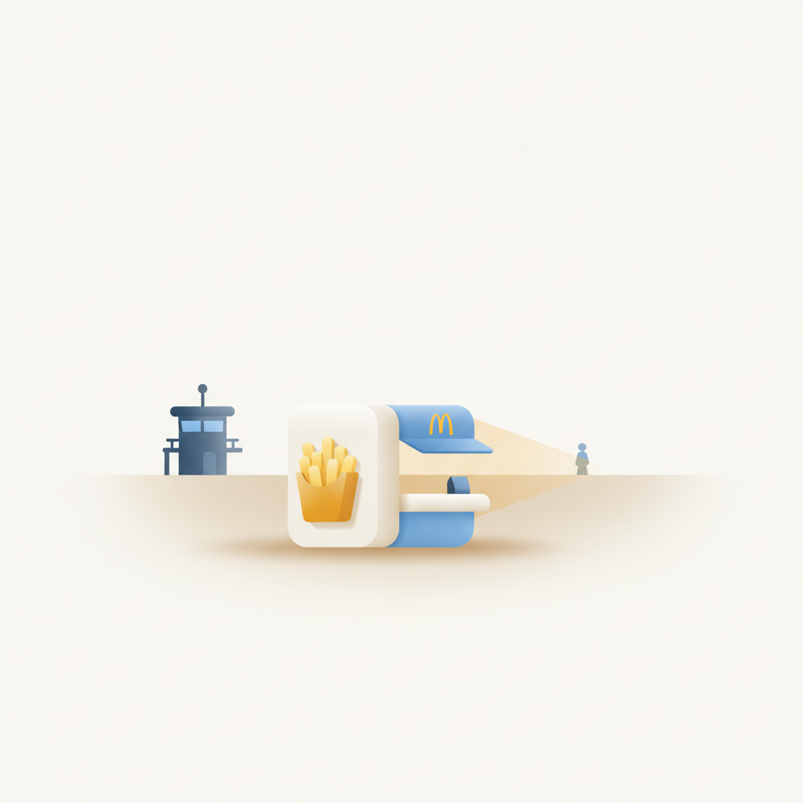
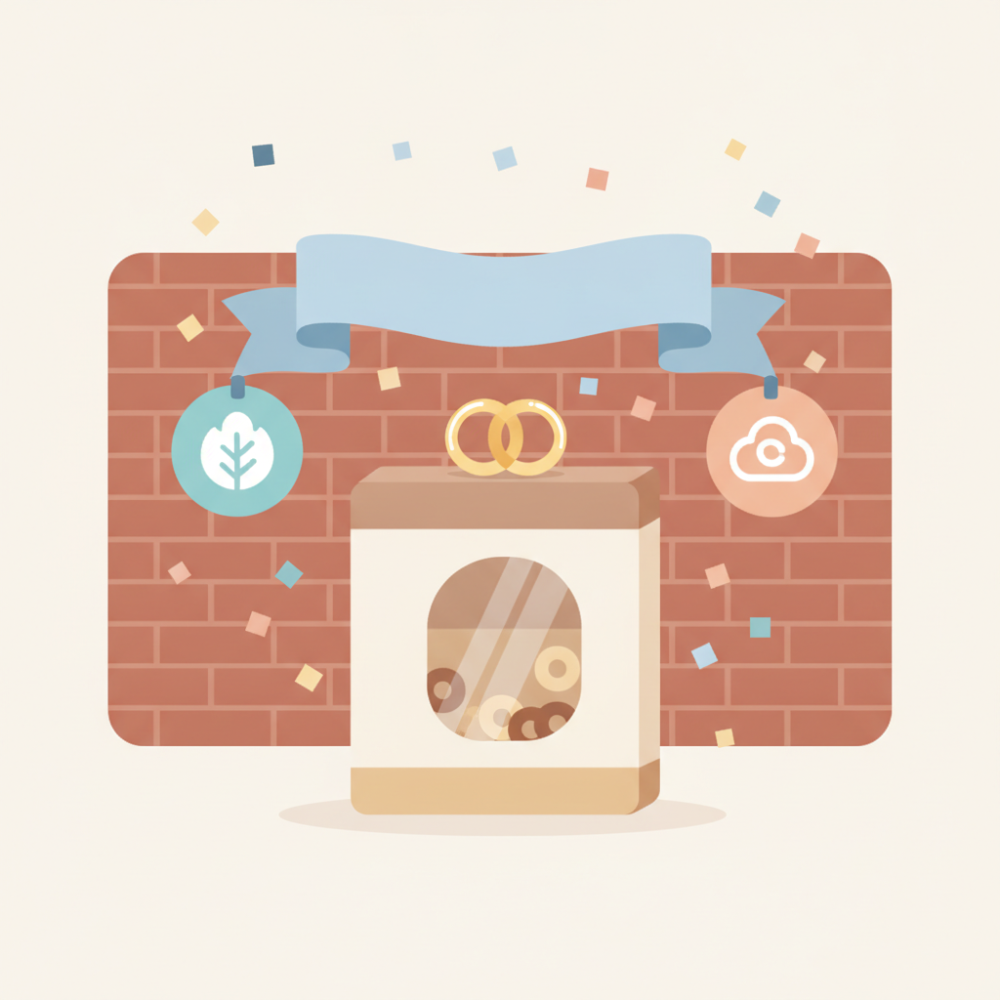
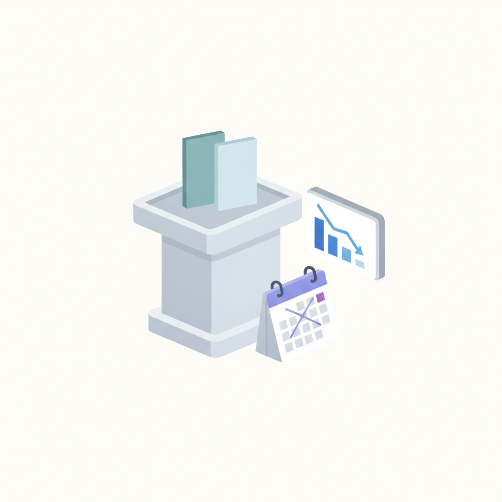

안녕하세요! 월요일 마케팅 소식 전해드립니다 😊 오늘은 맥도날드 '행복의 버거' 캠페인과 켈로그 첵스의 신제품 캠페인이 특히 눈길을 사로잡습니다. 맥도날드는 동해안 최전방 장병 가족을 크루로 변신시켜 깜짝 재회를 연출하는 팝업을 현장에서 직접 열었고, 켈로그는 신제품 출시를 캐릭터 결혼 스토리로 풀어내 성수동에서 소비자를 실제 하객으로 초대했습니다. 두 캠페인 모두 '브랜드가 무대를 만들고, 소비자가 그 안에서 진짜 감정을 경험하게 한다'는 공통된 설계가 돋보입니다.
CJ메조미디어의 '젠-AI 리포트'에서 나온 10대 인사이트도 함께 챙겨두시면 좋겠습니다. AI에게 구매 고민을 묻는 건 자연스럽게 받아들이면서도, AI가 만든 광고에는 오히려 거부감을 드러내는 10대의 이중적 태도는 앞으로 Z세대 이하 세대를 대상으로 캠페인을 설계할 때 짚고 넘어가야 할 지점입니다. '추천은 수용하되, 설득은 거부한다'는 이 감각은 크리에이티브 방향은 물론 인플루언서 협업 구조를 짤 때도 실질적인 기준이 될 수 있습니다.
이번 주도 현장에서 바로 꺼내 쓸 수 있는 인사이트들로 가득한 한 주 되시길 바랍니다! 🚀

1CJ메조미디어가 발간한 '젠-AI 리포트'에 따르면 생성형 AI 환경에서 성장한 10대는 '살까 말까' 같은 구매 고민을 AI에게 묻는 등 일상적 의사결정에 AI를 적극 활용한다. 그러나 AI가 만든 광고 콘텐츠에 대해서는 부정적 반응을 보이는 이중적 태도를 드러냈다. 10대를 타깃으로 하는 마케터라면 AI 활용 구매 여정을 공략하되, 광고 크리에이티브는 인간적 감성을 유지하는 전략이 필요하다.
› 2미국광고주협회(ANA)가 인플루언서 마케팅의 비용 낭비를 줄이고 투자 효율을 높이기 위한 개선 보고서를 발표했다. 광고대행사·탤런트 에이전시·기술 플랫폼 등 복잡한 거래 구조를 점검하고, 인플루언서 선정·검증·비용 공개·성과 측정 강화를 핵심 과제로 제시했다. 인플루언서 마케팅 예산을 운용하는 마케터라면 대행 구조의 투명성과 성과 측정 체계를 재점검할 시점이다.
›
3WPP 엔터프라이즈 솔루션이 발표한 보고서에 따르면, 검색 결과 노출 부족·부실한 상품 정보·잘못된 제품 데이터·비효율적 운영 방식이 브랜드의 온라인 매출 기회를 지속적으로 잠식하고 있다. 온라인에서 제품을 판매한다고 해서 모든 매출 기회가 자동으로 확보되는 것은 아니라는 점을 보고서는 강조한다. 이커머스 담당 마케터는 디지털 선반 최적화를 광고 집행만큼 중요한 과제로 다뤄야 한다.
›
4미국 인터넷 가구는 평균 5.3개의 스트리밍 서비스를 구독하고 있으며, 이용 가능한 독립형 스트리밍 서비스도 300개를 넘어 광고 인벤토리와 측정 방식 관리가 갈수록 복잡해지고 있다. 이런 환경에서 스트리밍 유료 가입자의 56%가 AI 기반 맞춤 광고를 원한다는 조사 결과가 나왔으며, 인터랙티브 광고에 대한 관심도도 높아졌다. 광고주는 분산된 스트리밍 플랫폼에 대응해 AI 맞춤화와 인터랙티브 포맷을 적극적으로 검토할 필요가 있다.
›
5맥도날드가 동해안 해안 경계 지역을 순찰하는 장병들을 위해 현장에 팝업 매장을 차리고, 맥도날드 크루로 변신한 장병 가족과의 깜짝 재회를 담은 8분짜리 캠페인 영상을 공개했다. 예상치 못한 장소에서 가족과 만나는 장면이 담긴 영상은 전국민의 감성을 자극하며 큰 반향을 일으켰다. 브랜드 메시지를 직접 전달하는 대신 진정성 있는 경험을 콘텐츠로 만드는 방식이 얼마나 강력한 바이럴 효과를 낼 수 있는지 보여주는 사례다.
›
6켈로그와 광고회사 스프링앤플라워가 신제품 출시를 캐릭터 '체키'와 '첵순'의 결혼 스토리로 풀어내 서울 성수동에서 소비자를 직접 결혼식에 초대하는 캠페인을 진행했다. 공식 인스타그램에서 두 캐릭터의 연애 과정을 먼저 공개하고 데이트·프러포즈 콘텐츠로 기대감을 쌓은 뒤 오프라인 이벤트로 연결하는 단계적 스토리텔링 방식을 활용했다. 신제품을 직접 알리는 대신 서사 중심의 IP 마케팅으로 소비자 참여를 이끌어낸 전략은 F&B 브랜드 마케터에게 참고할 만한 사례다.
›
78월 광고 경쟁 PT 시장은 전체 규모는 전월과 비슷했으나 프로젝트 수가 크게 줄어 광고회사들이 체감하는 시장 분위기는 여전히 냉랭한 것으로 파악됐다. 국내외 경제 불확실성 속에 광고주들이 광고 집행을 연기하거나 축소하고 일부 계획은 철회하는 사례도 나타나고 있다. 마케터 입장에서는 예산 집행의 효율성과 우선순위 재설정이 그 어느 때보다 중요한 시점이다.
›브랜드 진단부터 지금 당장 해야 할 우선순위까지,
30분 무료 상담에서 함께 정리해드려요.
이미 수십 개 브랜드가 상담받았습니다.
내 브랜드처럼, 함께 고민하는 팀원의 마음으로 봅니다.
스타트업 대표·마케팅 담당자를 위한 30분